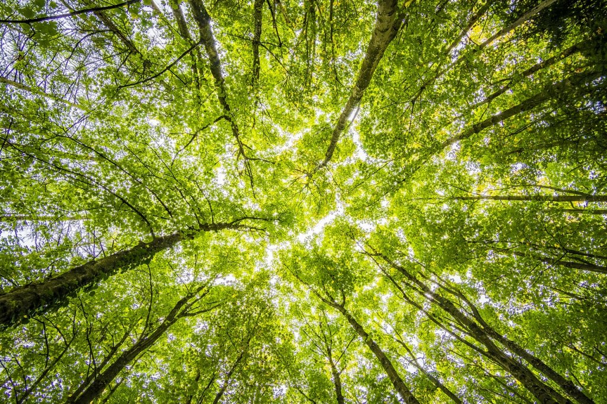

Explora el Bosque Urbano
Descubre las especies nativas de Hermosillo y sus características
Bosque Urbano de Sonora
Descubre las especies nativas de Hermosillo y sus características
Impacto medioambiental del bosque urbano según metodología U.S. Forest Service
Los árboles interceptan agua de lluvia, reduciendo la escorrentía y previniendo inundaciones urbanas.
La sombra de los árboles reduce la necesidad de aire acondicionado en edificios cercanos.

Los árboles filtran contaminantes del aire, mejorando la salud respiratoria de la comunidad.
Conoce cómo registramos árboles y calculamos beneficios ecológicos usando estándares del U.S. Forest Service
Cada árbol se geolocaliza usando GPS de alta precisión (±3 metros) para crear coordenadas exactas que permiten su identificación única en el mapa.
Se mide el Diámetro a la Altura del Pecho (DAP) usando cinta diamétrica a 1.3m del suelo, y la altura total con clinómetro digital para determinar el volumen del árbol.
Especialistas en botánica identifican la especie usando características morfológicas (hojas, corteza, frutos) y referencias taxonómicas para especies de Sonora.
Se toman fotografías del árbol completo, hojas, corteza y entorno para crear un registro visual que permite verificación posterior y estudios fenológicos.
Los datos se ingresan en sistemas GIS especializados, donde se validan coordenadas, se verifican mediciones y se asigna un ID único a cada árbol del inventario.
Utilizamos las ecuaciones alométricas del U.S. Forest Service i-Tree Model, adaptadas para el clima árido de Sonora:
I = Interceptación anual (litros)
LAI = Índice de Área Foliar (específico por especie)
P = Precipitación anual promedio (340mm en Hermosillo)
C = Coeficiente de interceptación (0.15-0.25)
A = Área de copa (π × radio²)
Los árboles interceptan agua de lluvia con sus hojas y ramas antes de que llegue al suelo, reduciendo la escorrentía urbana y recargando acuíferos localmente.
E = Ahorro energético anual (kWh)
Sombra = Área de sombra proyectada (m²)
CDD = Grados-día de enfriamiento (3,200 en Hermosillo)
EF = Factor de eficiencia de enfriamiento (0.18 kWh/°C·día)
ET = Evapotranspiración (litros/día)
HDD = Grados-día de calentamiento (850 en Hermosillo)
Los árboles reducen temperatura ambiente mediante sombra directa y enfriamiento evaporativo, disminuyendo la demanda energética de edificios cercanos hasta en un 30%.
AP = Contaminantes removidos anualmente (kg)
Pi = Concentración del contaminante i (μg/m³)
Vi = Velocidad de deposición (m/s por contaminante)
LAI = Índice de Área Foliar
Ti = Tiempo de exposición anual (8,760 horas)
Se calculan: PM2.5, PM10, O₃, NO₂, SO₂ y CO. Los árboles filtran partículas y gases tóxicos mediante absorción foliar y deposición en superficie de hojas.
VT = Valor total anual (MXN)
VA = Valor interceptación agua × $0.015/litro
VE = Valor ahorro energético × $3.50/kWh
VC = Valor purificación aire × $850/kg CO₂eq
VR = Valor reducción temperatura × $50/°C reducido
Los valores económicos se basan en tarifas locales de servicios públicos de Hermosillo y costos de mitigación climática del IPCC, expresados en pesos mexicanos (2024).
Conoce más sobre los árboles urbanos y su importancia para Hermosillo
Aprende sobre las especies autóctonas y por qué son importantes para nuestro ecosistema local.
Guías prácticas para el cuidado, poda y mantenimiento de árboles urbanos.
Conoce cómo calculamos los beneficios ecológicos usando estándares internacionales.
Únete a eventos de plantación y cuidado del bosque urbano de Hermosillo
Parque Madero - 8:00 AM
PlantaciónCentro Cultural - 10:00 AM
Educativo